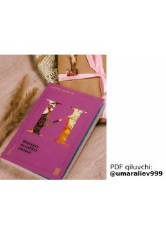

ASIshq va ma'naviy kamolot haqidagi ta'sirli turk romani.
Ushbu roman turk yozuvchisi Fotih Duman qalamiga mansub bo'lib, ishq va ma'naviy izlanishlar mavzusiga bag'ishlangan. Asar inson qalbining chuqur kechinmalari hamda ilohiy muhabbatning inson hayotidagi o'rni haqida hikoya qiladi.